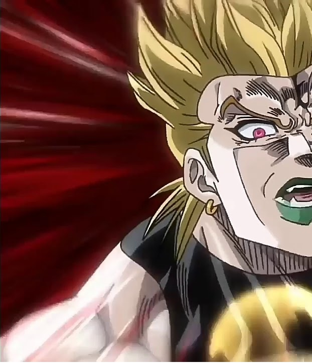
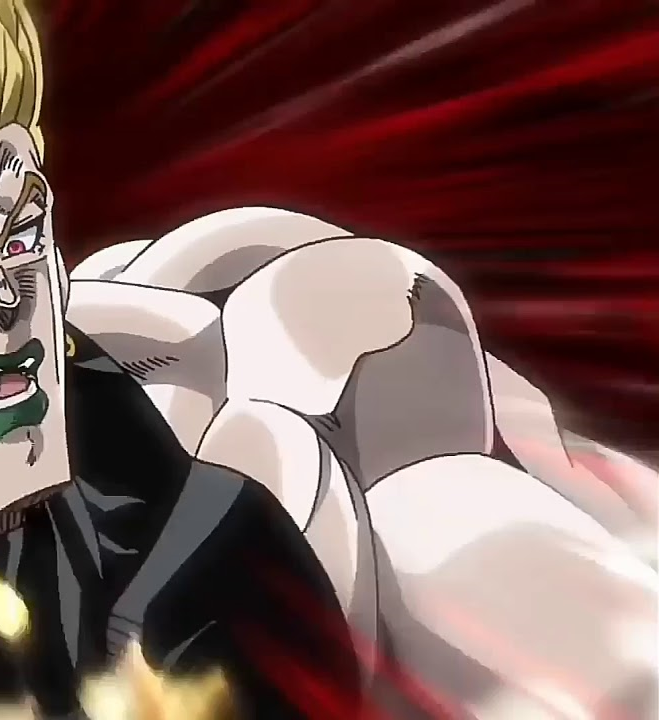
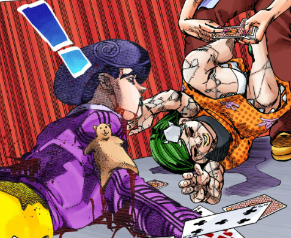
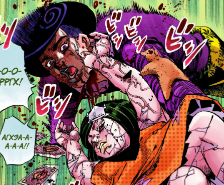
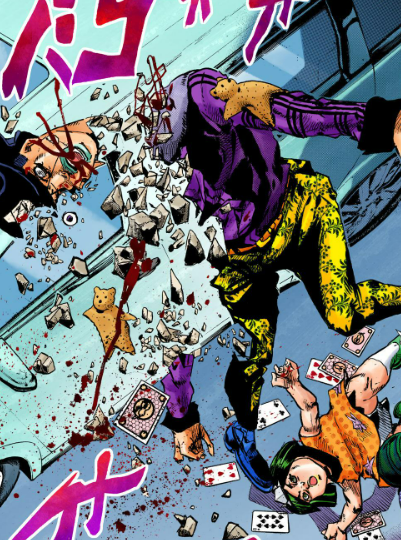

Смерти антогонистов в ДжоДжо
All antagonists


Dio Brando
Дио умер от рук стенда Джотаро, его стенд ударили в ногу, после чего на нем начали появлятся трещины и они с Дио разорвались пополам.


Kira Yoshikage
Шею Киры переехала и раздавила машина скорой помощи.


Enrico Pucci
Пуччи был убит слишком насыщенным кислородом воздухом


Toru/Satoru Akefu
Тору через равноценный обмен новой Локакаки передали каменую болезнь семьи Хигашиката, от чего тот и умер




Kars
Карс был отправлен в космос и заморожен низкой температурой, а после продолжительного времени перестал мыслить.

Diavolo/Vinegar Doppio
Дьяволо был отправлен в вечный цикл смертей эволюционировавшим стендом Джорно, а Доппио был брошен и умер в одиночестве в теле Бруно.

Funny Valentine
Валентайн медленно умирал от энергии бесконечного вращения ногтей Джонни.